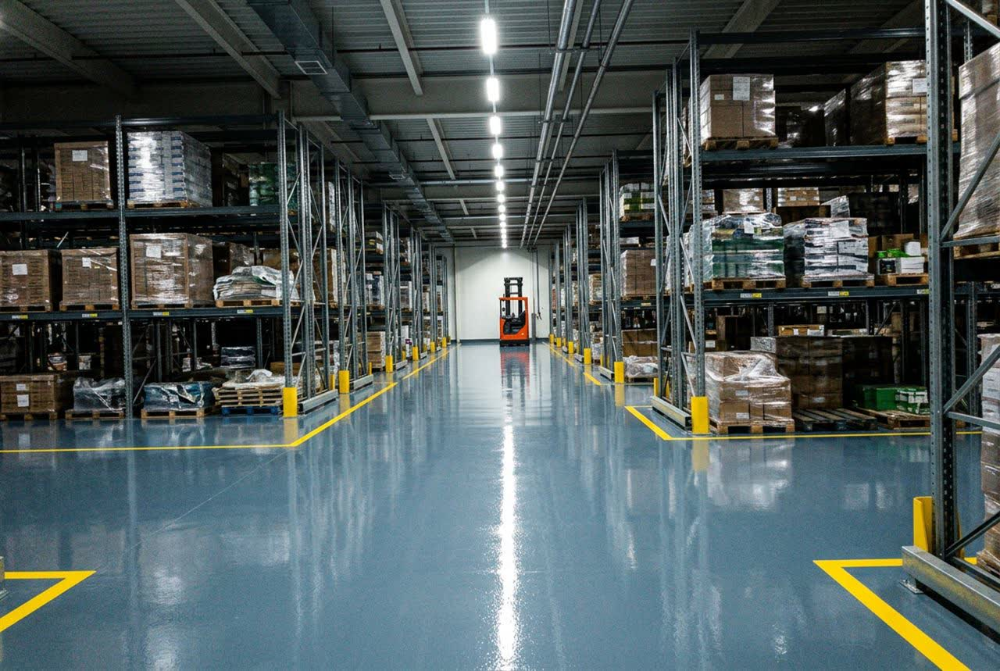

Промышленные полы для склада
Покрытие, которое держит ричтраки, точечную нагрузку стеллажных опор и не пылит под паллетами. Работаем от 200 м², захватками — отгрузки не останавливаются.

Что убивает пол на складе
Склад — не самая агрессивная среда по химии, но самая тяжёлая по механике. Пол разрушают четыре вещи, и почти всегда в этом порядке:
- Точечная нагрузка от стеллажей. Опорная пятка стойки давит на площадь 10×10 см. При загруженном стеллаже это десятки тонн на квадратный метр. Если основание слабое, пол продавливается именно под пятками, и стеллаж уходит из вертикали.
- Истирание от техники. Ричтрак на развороте работает как шлифмашина. За год интенсивной эксплуатации в зонах разворота стирается до миллиметра покрытия, а на обычном бетоне — заметно больше.
- Удары у доков. Паллета, сорвавшаяся с вил, бьёт в пол углом. На границе дока и склада покрытие скалывается первым.
- Пыль. Бетон без защиты расслаивается сверху: пыль идёт в товар, в подшипники техники и в фильтры. На складах с пищёвкой и электроникой это прямая причина претензий.
Какое покрытие выбрать
Выбор определяется не бюджетом, а техникой и режимом работы склада.
| Задача склада | Система | Толщина | Что даёт |
|---|---|---|---|
| Сухое хранение, лёгкая техника, цель — убрать пыль | Упрочняющая пропитка | проникает на 3–5 мм | Самое дешёвое решение. Пыль уходит, но от ударов и химии не защищает |
| Стеллажное хранение, ричтраки и штабелёры | Эпоксидный наливной | 2–3 мм | Ровная бесшовная поверхность, лёгкая уборка, разметка проездов |
| Интенсивное движение, развороты, зоны комплектации | Кварцнаполненный эпоксидный | 4–6 мм | Запас на истирание, держит точечный срез от колёс |
| Доки, рампы, зоны погрузки | Кварцнаполненный с противоскольжением | 4–6 мм | Ударостойкость и сцепление на мокрой поверхности |
| Холодный склад, морозильные камеры | Полиуретановый или полиуретан-цемент | 4–9 мм | Работает при перепадах температур, не трескается на морозе |
На практике склад редко бывает однородным. Нормальное решение — разные системы по зонам: в проездах кварцнаполненная, в зоне напольного хранения эпоксидная, у доков ударостойкая. Это дешевле, чем делать весь склад по самому тяжёлому сценарию.
Швы: главная ошибка на складах
Бетонный пол склада нарезан деформационными швами. Их нельзя просто залить покрытием — шов продолжит работать и разорвёт пол по своей линии. Правильная последовательность такая: шов расшивается, очищается, заполняется эластичным герметиком и только потом обрамляется покрытием.
Если по шву ездит техника, кромки предварительно укрепляют: именно на них приходится удар колеса. Разбитые кромки швов — причина номер один, по которой склад вызывает подрядчика повторно через год.
Подготовка основания
Полимер не клеится к пыли и к слабому бетону — он клеится к прочному основанию. Поэтому до укладки:
- проверяем влажность бетона: выше 4% укладывать нельзя, покрытие отслоится;
- снимаем слабый верхний слой шлифовкой — дробеструй нужен не всегда, на ровном бетоне шлифовка даёт лучшую адгезию;
- вскрываем и ремонтируем трещины, заполняем выбоины ремонтным составом;
- обеспыливаем промышленным пылесосом, грунтуем в два прохода по впитывающим участкам.
Подготовка занимает до половины срока работ и определяет, простоит пол три года или десять. Экономия здесь — это переделка за свой счёт через год.
Сроки и работа без остановки склада
Ориентир по срокам на 500 м²: подготовка 1–2 дня, грунт и заливка 1–2 дня, набор прочности под пешую нагрузку сутки, под технику — 3–5 суток в зависимости от системы. Итого от 3 до 5 рабочих дней.
Если склад не может встать, площадь делится на захватки по 200–400 м². Работаем ночами и в выходные, захватка ограждается и отсекается от рабочей зоны, техника объезжает. Общий срок растягивается примерно в полтора раза, зато отгрузки идут. Для срочных участков применяем ММА-системы: по ним можно ездить уже через 2 часа после укладки.
Как это выглядит
Складские объекты: стеллажное хранение, зоны погрузки, проезды и зоны комплектации.
Частые вопросы
Рассчитать пол для вашего склада
Пришлём смету в течение 24 часов после замера. Выезд инженера по Москве и области бесплатный.
Заявка ушла. Перезвоним в течение 30 минут в рабочее время.
Другие объекты
Скоро здесь появятся страницы по остальным типам объектов. Пока задачу по любому из них можно обсудить по телефону или через форму выше.